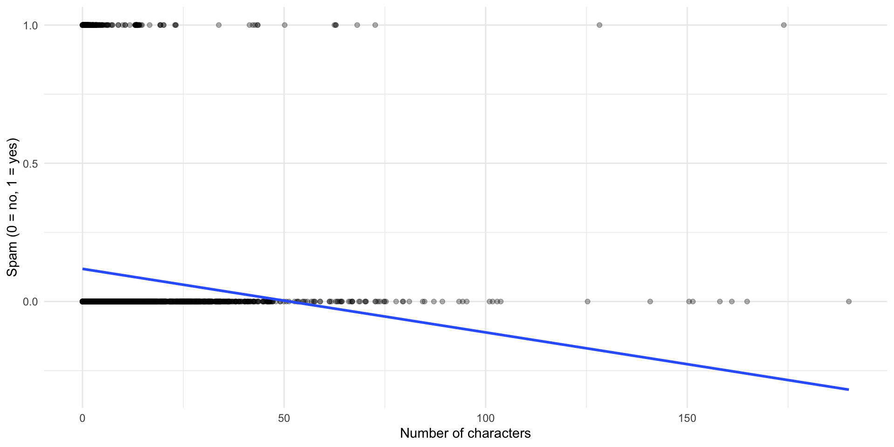
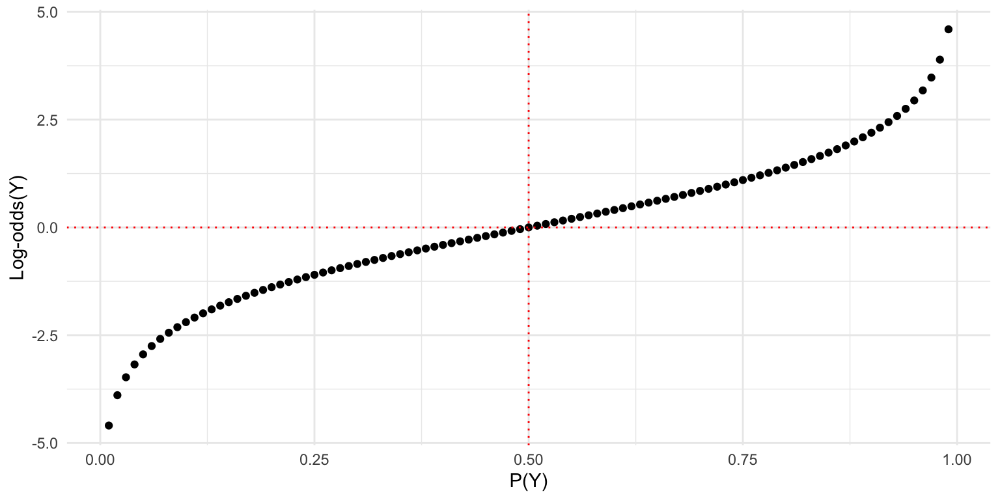
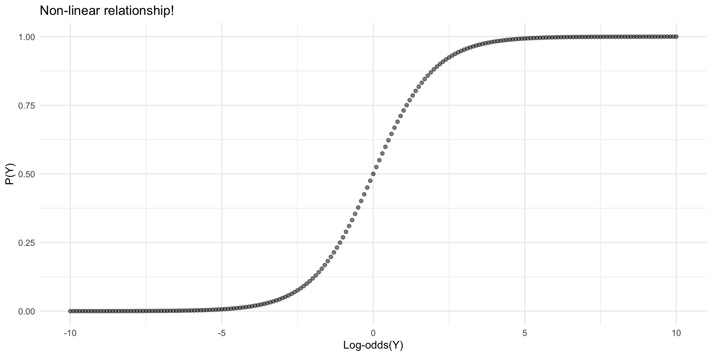

Mixed Effects Models
Goals of the lecture
- The independence assumption of linear regression.
- What about when data are non-independent?
- Introducing mixed effects models.
- Fixed vs. random effects.
- Adding random intercepts.
- Adding random slopes.
- Mixed models in practice with
lme4.- Model comparison: the logic of likelihood-ratio tests.
Load libraries
Part 1: Independence
The independence assumption; why it matters; examples of non-independence.
What is independence?
Independence means that each observation in your dataset is generated by a separate, unrelated causal process.
- When you flip a coin, each flip is independent of the others
- The outcome of flip #1 doesn’t influence flip #2
- No hidden factors connect multiple observations
- Each data point provides new information
Why does independence matter?
Standard statistical methods (t-tests, OLS regression, ANOVA) assume independence.
When this assumption is violated:
- Standard errors are underestimated
- Confidence intervals are too narrow
- p-values are too small (inflated Type I error)
- Your conclusions may be wrong!
The problem: Treating non-independent observations as independent makes you overconfident in your results.
Example: Independent data
You test whether a new drug increases happiness:
- 100 people receive the drug
- 100 people receive a placebo
- Each person provides one happiness rating (1-7 scale)
- You compare the two groups with a t-test
✓ Independence is reasonable here
Each person contributes exactly one data point.
Another independent example
You test whether people respond differently to metaphor type A vs. B:
- 200 participants, randomly assigned to condition A or B
- Each participant sees one item
- Between-subjects design with one item per person
- Compare responses with OLS regression
✓ Independence is reasonable here
No repeated measures, no item effects to worry about.
Visualizing independent data
Each observation is independent—no nesting structure.
Analyzing independent data
Estimate Std. Error t value Pr(>|t|)
(Intercept) 727.4722 1.467172 495.8328 2.582790e-308
groupB -19.2071 2.074895 -9.2569 3.518843e-17Interpretation: - Intercept (groupA) = 727.47 (mean of group A) - groupB coefficient = -19.21 (difference from A) - Group B is about 20 units lower than Group A
When independence fails
Non-independence occurs when different observations are systematically related, i.e., they were produced by the same generative process.
Common sources of non-independence in behavioral research:
- Repeated measures: Same participant tested multiple times
- Nested data: Students within classrooms within schools
- Stimulus items: Same stimuli shown to multiple participants
- Time series: Measurements over time from same units
- Clustered designs: Participants recruited from same communities
Example: The sleep study
The sleepstudy dataset tracks reaction times in 18 subjects over subsequent days of sleep deprivation:
Reaction Days Subject
1 249.5600 0 308
2 258.7047 1 308
3 250.8006 2 308üí≠ Check-in
Based on the structure of this study, what might be a source of non-independence?
Naive analysis (wrong!)
Let’s pretend we don’t know about the nested structure:
üí≠ Check-in
What’s not pictured here?
The real structure

Subjects differ in:
- Overall reaction time (baseline speed)
- Effect of sleep deprivation (some are more resilient)
Subject-level variability
Some subjects are consistently faster; others are consistently slower.
Two types of nested variance
- Random intercepts: Subjects differ in their average reaction time
- Some people are just faster/slower overall
- Even with no sleep deprivation!
- Random slopes: Subjects differ in how much sleep deprivation affects them
- Some people are resilient (shallow slope)
- Others deteriorate quickly (steep slope)
Mixed effects models let us account for both types of variance.
Part 2: Introduction to mixed effects models
Fixed vs. random effects; random intercepts; random slopes.
What are mixed effects models?
Mixed effects models combine:
- Fixed effects: Variables we care about (e.g., experimental conditions)
- These are your hypotheses!
- Estimated with specific coefficient values
- Random effects: Grouping variables that create non-independence
- Sources of variability we need to control for
- Allow intercepts/slopes to vary by group
- Estimated as distributions (variance parameters)
Goal: Get better estimates of fixed effects by accounting for nested structure.
Fixed vs. random effects
Determining which factors to include as fixed vs. random effects is not always straightforward. Here’s a rough guide, but we’ll discuss it again later too:
How do you decide?
- Fixed effects:
- Variables you’re theoretically interested in
- Want to estimate specific coefficient values
- Often experimental manipulations
- Examples: treatment condition, time, drug dosage
- Random effects:
- Grouping/clustering variables
- Want to account for variance, not estimate specific values
- Usually sampling from larger population
- Examples: participant ID, item ID, school, lab
The mixed model formula
Standard regression:
\[Y = \beta_0 + \beta_1 X + \epsilon\]
Mixed effects model with random intercepts:
\[Y = (\beta_0 + u_0) + \beta_1 X + \epsilon\]
Where:
- \(\beta_0\) = overall intercept (fixed effect)
- \(u_0\) = subject-specific deviation from overall intercept (random effect)
- \(\beta_1\) = fixed effect of X
- \(\epsilon\) = residual error
Random intercepts: Intuition
Random intercepts allow each group (e.g., subject) to have its own baseline:

Same slope, different intercepts.
Random intercepts: R syntax
Basic model with random intercepts:
Breaking down the syntax:
Reaction ~ Days: Fixed effect of Days on Reaction(1 | Subject): Random intercept for each Subject1= intercept|= “grouped by”Subject= grouping variable
Extracting random intercepts
After fitting the model, you can extract the random effects:
(Intercept)
308 40.783710
309 -77.849554
310 -63.108567
330 4.406442These are deviations from the overall intercept (fixed effect).
Understanding the intercepts
Each subject’s fitted intercept = fixed intercept + random deviation:
(Intercept)
251.4051 [1] 40.78371(Intercept)
292.1888 Visualizing random intercepts

Random slopes: Intuition
Random slopes allow the effect of X to vary by group:

Random slopes: R syntax
Model with random intercepts AND slopes:
Estimate Std. Error t value
(Intercept) 251.40510 6.824597 36.838090
Days 10.46729 1.545790 6.771481Breaking down the syntax:
Reaction ~ Days: Fixed effect of Days(1 + Days | Subject): Random effects for Subject1= random interceptDays= random slope for Days|= grouped bySubject= grouping variable
Extracting random slopes
After fitting the model, you can extract the random effects:
(Intercept) Days
308 2.258551 9.198976
309 -40.398738 -8.619681
310 -38.960409 -5.448856
330 23.690620 -4.814350Now, we have deviations from the intercept and from the Days slope.
Understanding the slopes
Each subject’s fitted slope = fixed slope + random deviation:
Days
10.46729 [1] 9.198976 Days
19.66626 Subject 308’s RT increases by ~19.67 ms per day (vs. population average of ~10.47 ms).
Visualizing random slopes

Why random slopes matter
Without random slopes: - Assumes the effect is the same for everyone - Underestimates uncertainty in the fixed effect - Can lead to false positives
With random slopes: - Acknowledges that effects vary across individuals - Provides more conservative (realistic) estimates - Better generalization to new subjects
Rule of thumb: If a variable varies within your grouping variable, include it as a random slope.
Multiple random effects
You can include multiple sources of random effects:
Common in psycholinguistics: - Random effects for subjects (people vary) - Random effects for items (stimuli vary) - Called “crossed random effects”
Conceptual summary
Mixed effects models help when:
- You have repeated measures
- You have nested/hierarchical structure
- You want to generalize beyond your specific sample
Key components: - Fixed effects: Your hypotheses - Random intercepts: Group-level baseline differences
- Random slopes: Group-level differences in effects
Part 3: Using lme4
Building and evaluating models; model comparisons; best practices and common issues.
The lme4 package
Most common R package for mixed models:
Main functions: - lmer(): Linear mixed effects models - glmer(): Generalized linear mixed models (logistic, Poisson, etc.)
Building your first model
Let’s fit a model with random intercepts only:
Note: REML = FALSE uses maximum likelihood estimation, which we need for model comparison.
Viewing model output
Linear mixed model fit by maximum likelihood ['lmerMod']
Formula: Reaction ~ Days + (1 | Subject)
Data: sleepstudy
AIC BIC logLik -2*log(L) df.resid
1802.1 1814.9 -897.0 1794.1 176
Scaled residuals:
Min 1Q Median 3Q Max
-3.2347 -0.5544 0.0155 0.5257 4.2648
Random effects:
Groups Name Variance Std.Dev.
Subject (Intercept) 1296.9 36.01
Residual 954.5 30.90
Number of obs: 180, groups: Subject, 18
Fixed effects:
Estimate Std. Error t value
(Intercept) 251.4051 9.5062 26.45
Days 10.4673 0.8017 13.06
Correlation of Fixed Effects:
(Intr)
Days -0.380Adding random slopes
Now let’s add random slopes for the Days effect:
This allows both the intercept AND the slope to vary by subject.
Comparing the models
Linear mixed model fit by maximum likelihood ['lmerMod']
Formula: Reaction ~ Days + (1 + Days | Subject)
Data: sleepstudy
AIC BIC logLik -2*log(L) df.resid
1763.9 1783.1 -876.0 1751.9 174
Scaled residuals:
Min 1Q Median 3Q Max
-3.9416 -0.4656 0.0289 0.4636 5.1793
Random effects:
Groups Name Variance Std.Dev. Corr
Subject (Intercept) 565.48 23.780
Days 32.68 5.717 0.08
Residual 654.95 25.592
Number of obs: 180, groups: Subject, 18
Fixed effects:
Estimate Std. Error t value
(Intercept) 251.405 6.632 37.907
Days 10.467 1.502 6.968
Correlation of Fixed Effects:
(Intr)
Days -0.138Model comparison: The logic
Question: Does adding variable \(X\) improve the model over a model without \(X\)?
Approach: Likelihood ratio test
- Compare log-likelihood of two nested models
- Model with more parameters should fit better
- But: is the improvement “worth it”?
- Test statistic: \(\chi^2 = -2(LL_{reduced} - LL_{full})\)
- Compare to chi-square distribution
Running model comparison
Data: sleepstudy
Models:
model_reduced: Reaction ~ (1 + Days | Subject)
model_full: Reaction ~ Days + (1 + Days | Subject)
npar AIC BIC logLik -2*log(L) Chisq Df Pr(>Chisq)
model_reduced 5 1785.5 1801.4 -887.74 1775.5
model_full 6 1763.9 1783.1 -875.97 1751.9 23.537 1 1.226e-06 ***
---
Signif. codes: 0 '***' 0.001 '**' 0.01 '*' 0.05 '.' 0.1 ' ' 1Interpretation:: Adding Days significantly improves fit
Extracting coefficients
Fixed effects (population-level):
(Intercept) Days
251.40510 10.46729 Random effects (subject-specific deviations):
(Intercept) Days
308 2.815789 9.075507
309 -40.047855 -8.644152
310 -38.432497 -5.513471
330 22.831765 -4.658665Visualizing random effects

Conclusion
- Mixed models are a valuable tool for modeling non-independent data.
- Random intercetps model correlated variance in
y; random slopes model correlated variance iny ~ x. - Coming up, we’ll discuss:
- More complex models (e.g., nested variance).
- Deep dive into fitting random effects (e.g., pooling).
- Understanding the outputs (e.g., variance partitioning).
- Best practices (e.g., “keep it maximal”).
- Diagnozing and fixing common issues (e.g., convergence failures).
- Generalizing to generalized linear mixed effects models.
CSS 211 | UC San Diego